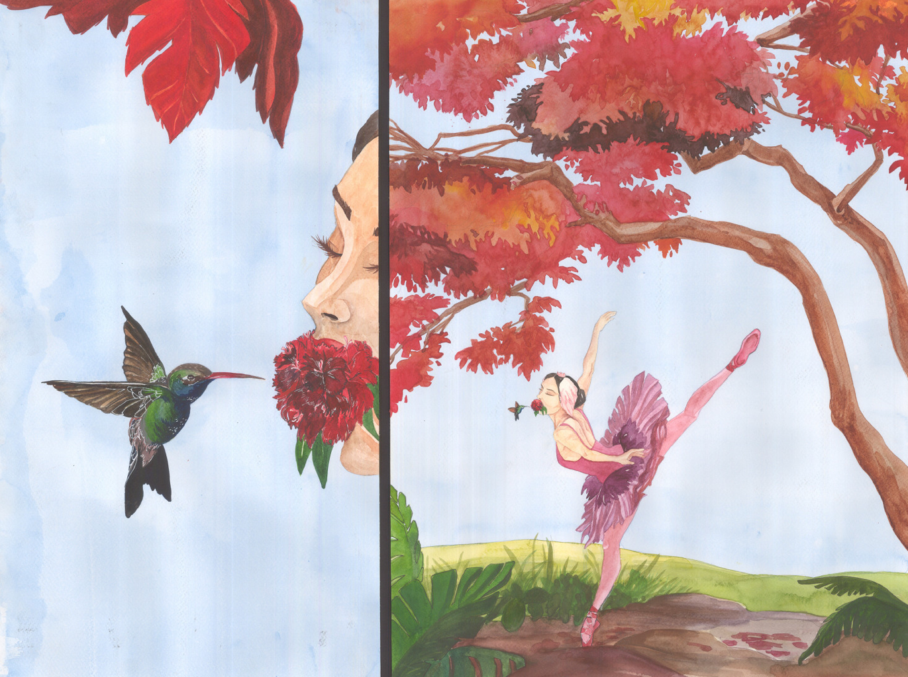

Selected artwork.
-

Lilies of the Desert - Watercolor on paper.
-

Reflected Motion - Watercolor on paper.
-
Ballet Practice - Watercolor on paper.
-
The King's Hunt - Charcoal on paper.
-

Perfect Landing - Watercolor on paper.
-

Unnamed - Watercolor on paper.